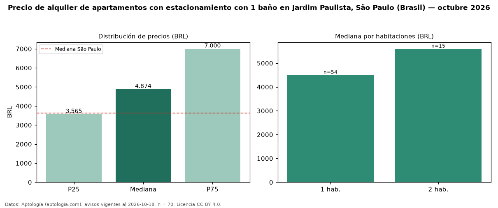

Precio de alquiler de apartamentos con estacionamiento con 1 baño en Jardim Paulista, São Paulo (Brasil) — octubre 2026
En Jardim Paulista, São Paulo (Brasil), la mediana de canon mensual de apartamentos con estacionamiento con 1 baño es BRL 4.874, según 70 avisos vigentes. Frente a la mediana de los apartamentos con estacionamiento en alquiler de Jardim Paulista (BRL 8.710, n = 261), queda 44 % por debajo; este segmento reúne el 27 % de esos avisos. Por metro cuadrado, la mediana es BRL 98,39/m² al mes (n = 68), 11 % por encima de los apartamentos con estacionamiento en alquiler de Jardim Paulista (BRL 88,30/m²). El área mediana anunciada es 48 m². El segmento con más oferta es el de 1 habitación (54 avisos, mediana BRL 4.500); pasar de 1 habitación a 2 habitaciones cambia la mediana +24 %. La cuota de mantenimiento o condominio mediana declarada es BRL 1.575 al mes (n = 68), aparte del canon. La mitad central de los avisos va de BRL 3.565 a BRL 7.000 (razón 2,0), una dispersión moderada. La mediana de todos los apartamentos en alquiler de São Paulo es BRL 3.621 (+35 % de diferencia). Datos: Aptología (aptologia.com), CC BY 4.0 — https://www.aptologia.com/br/aluguel/sao-paulo/jardim-paulista. Archivos: PDF, CSV con las cifras y gráfica PNG.

| Avisos únicos | 70 |
|---|---|
| Percentil 25 | COP 3.565 |
| Mediana | COP 4.873 |
| Percentil 75 | COP 6.999 |
| Mediana por m² | COP 98 |
Fuente: avisos vigentes de portales inmobiliarios recopilados por Aptología, deduplicados (mínimo 30 avisos únicos por celda). Precios pedidos, no cerrados. Fecha: 2026-10-18.